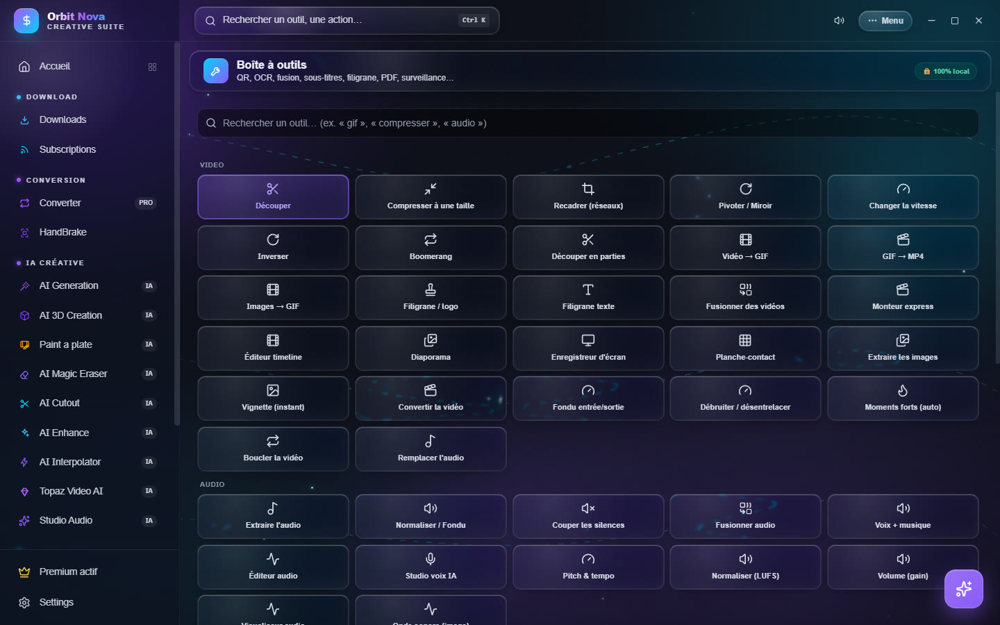
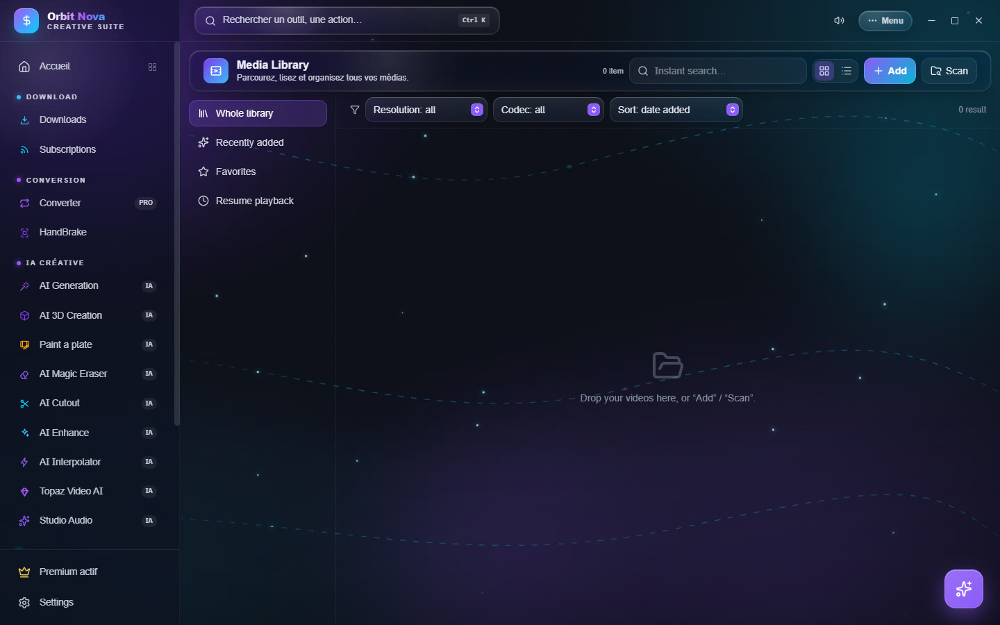

Toolbox and media library
Toolbox
More than 60 small tools for everyday jobs, each on a single page: pick a tool, drop the file, set two or three options, done.


The search bar at the top finds a tool when you type what you want to do ("gif", "compress", "audio"…).
| Category | Tools |
|---|---|
| Video | Trim, Compress to a size, Crop (social), Rotate / Mirror, Change speed, Reverse, Boomerang, Split into parts, Video → GIF, GIF → MP4, Images → GIF, Watermark / logo, Text watermark, Merge videos, Quick editor, Timeline editor, Slideshow, Screen recorder, Contact sheet, Extract frames, Thumbnail (instant), Convert video, Fade in/out, Denoise / deinterlace, Highlights (auto), Loop video, Replace audio |
| Audio | Extract audio, Normalize / Fade, Cut silences, Merge audio, Voice + music, Audio editor, AI voice studio, Pitch & tempo, Normalize (LUFS), Volume (gain), Audio visualizer, Waveform (image) |
| Image | Convert an image, Clean metadata, Rotate / Mirror (image), Crop, Border / frame, Adjustments & filters, Color palette, Apply a LUT, Colorize (AI), YouTube thumbnail, Comparator |
| Text and documents | PDF tools, Burn subtitles, Translate subtitles, QR Code, OCR (text from image) |
| Files | Batch rename, Watched folder |
Two tools deserve a word more:
- Compress to a size aims at an exact weight: Discord (10 MB), E-mail (25 MB), Discord Nitro (50 MB), Nitro+ (500 MB) or a custom size.
- Watched folder processes every file that lands in a folder: videos to MP4 (H.264), videos compressed to a target size, videos to MP3, or images to another format. Handy for a captures or exports folder.
Media Library
The Media Library gathers your videos in a library, with a built-in player.


- Add files, or Scan a whole folder (subfolders included).
- On the left: Whole library, Recently added, Favorites, Resume playback (started videos resume where you stopped) and Series (sorted by season and episode).
- At the top: instant search, Resolution and Codec filters, sorting by date added, name, duration, size or season/episode.
- Click a video to play it. The Information panel shows the codecs, size and duration.
- Creative export: Prepare for a use (editing, social…) picks the right preset, then Convert.